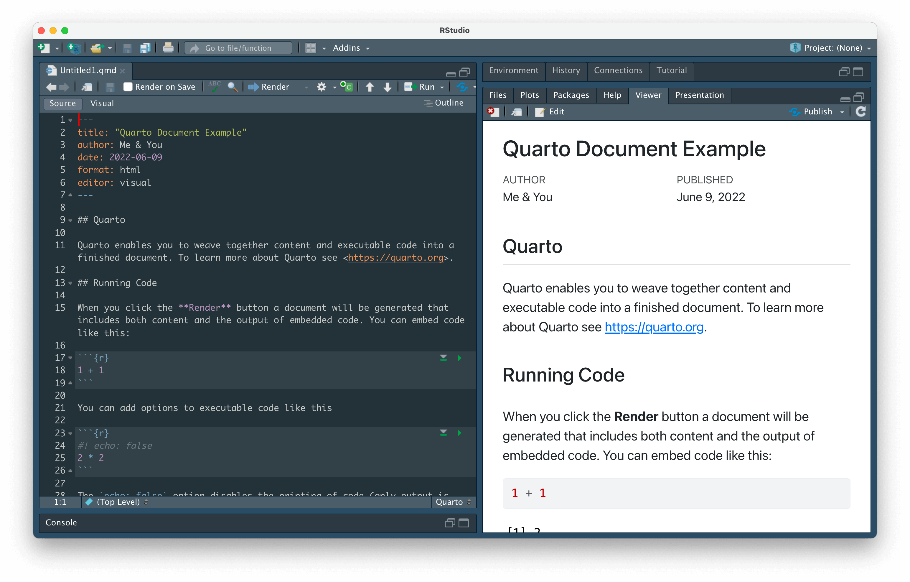
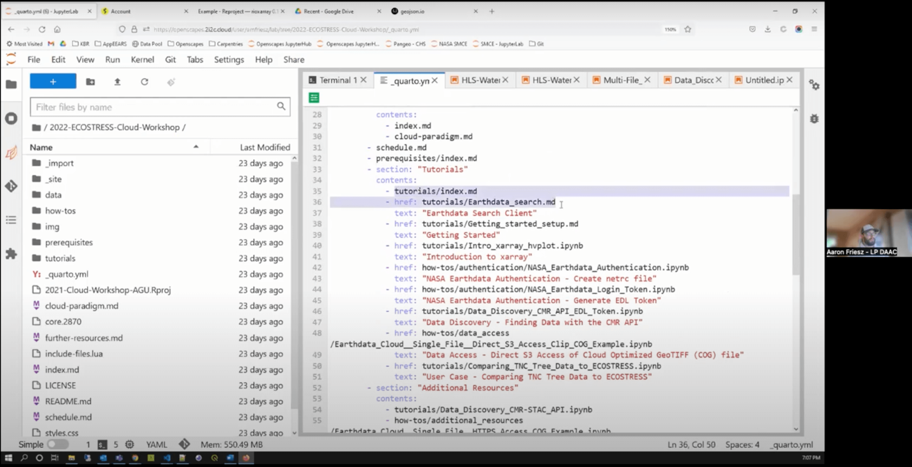

![]()

This blog post is cross-posted from the Openscapes blog.
Hello Quarto! A Quarto Chat with NASA Openscapes, co-hosted with R-Ladies Santa Barbara
Our 6th Openscapes Community Call co-hosted with R-Ladies Santa Barbara featured a “celebrity interview” with NASA Openscapes Mentors Amy Steiker, Catalina Oaida Taglialatela, Aaron Friesz, with J.J. Allaire, lead Quarto developer and CEO of RStudio. The conversation was led by Sam Csik of R-Ladies Santa Barbara.
Quarto is an open-source scientific and technical publishing system built on Pandoc that allows users to create dynamic documents, presentations, websites, and more. What is especially unique about Quarto is that it works seamlessly across multiple languages -- R, Python, Julia, and ObservableJS -- allowing for easy collaboration among users from different backgrounds and areas of expertise. Conversation was centered around the experiences of NASA researchers from different Distributed Active Archive Centers (DAACs) using Quarto to enable collaborative, data-intensive, open science in the cloud. The recording is on Openscapes YouTube.
Julie Lowndes is the director of Openscapes, and co-lead of NASA Openscapes with Erin Robinson. Julie is a marine ecologist turned open data scientist because she was so empowered by the R community. Sam asked Julie to describe Quarto - that she had heard it described as “a document, a system, and a way of life”. Julie confirmed -- Quarto is a document in that you can write prose, code, and render outputs like figures and tables all in one place (and also present it in a beautiful way!). She loves that it has a very similar feel to RMarkdown, yet Quarto as a system extends all the RMarkdown functionality that many R users already know and love to additional languages . And finally, this powerful system can become what feels like a way of life because it informs the way she works and collaborates both with herself and others.
“As an R user collaborating with other R users, Quarto refines my RMarkdown experience. As an R user collaborating with Python users, Quarto helps us really reimagine how we work together.” — Julie Lowndes
Julie screenshared a rendered Quarto document alongside the .qmd (“quarto markdown”) file that generated it in RStudio. She pointed out how similar .qmd files look and feel to .rmd (“R markdown”) files, and that there isn’t a rush to make the switch from .rmd to .qmd if you don’t want to -- but the migration is smooth if you do!
Catalina Oaida Taglialatela is an Applied Science System Engineer at NASA’s Jet Propulsion Laboratory and The Physical Oceanography Distributed Active Archive Center (PO DAAC). Catalina is focused on increasing the number of researchers who use NASA data by helping identify and reduce barriers to science when data and services are in the cloud. She shared that Quarto has enabled her and her teams to curate and organize materials from GitHub repositories in a way that is easy (and oftentimes, less intimidating) for data end-users and/or collaborators to engage with. The NASA Earthdata Cloud Cookbook, a Quarto website built by the NASA Openscapes Mentors, showcases clear step-by-step How-Tos on searching for and using Earthdata, in-depth, targeted tutorials and workshops, and also lessons that are currently under development.

Catalina commented that sharing works-in-progress was a new concept and certainly one that took some getting used to, but she hopes that this increased transparency will facilitate learning among those who are looking to expand on the work that her NASA Openscapes cohort members are doing.
“Before Openscapes and Quarto, I was hesitant to put unfinished tutorials or ‘how-to’ notes on a public platform, but I’ve really come to appreciate this new open way of collaborating and developing in a way that lets others learn and scale up our efforts. I see Quarto as a tool that enables us to open up and share our process and artifacts in a way that is friendly to the broader data user community.” — Catalina Oaida Taglialatela
Amy Steiker is the Data Service Engineer at the National Snow and Ice Data Center (NSIDC) and specializes in creating data education resources, tools, and data transformation services. If you already love making slides in xaringan, it’s time to check out Quarto presentations! In just a few short weeks, Amy and her team were able to build some really stunning slides using Quarto for her 2021 American Geophysical Union (AGU) talk (check out the slides and use their source code as inspiration for building your own!). She stressed that while it at first seemed daunting to tackle this in a short period of time, the Quarto infrastructure made it really quite simple to generate content from a Jupyter Notebook with Python, preview changes “on the fly” to get slide formatting just right, and finally publishing and presenting it. Amy’s slides were some of the first ever(!) created with Quarto, providing both a challenge and an exciting opportunity to come up with creative solutions. As early adopters, getting the chance to try things out and work alongside J.J. and the Quarto developer team made it possible to push the limits of what was possible, and in some cases, inform Quarto features.
J.J. Allaire is the lead developer of Quarto and CEO and co-founder of RStudio, where he is focused on supporting technical publishing, data science, and open science. When asked about his motivation for developing Quarto, J.J. spoke first about RMarkdown -- for 10 years now, RMarkdown has empowered people to publish, communicate, and work reproducibly. For folks who are familiar with the R programming language, it has been an indispensable tool. A large motivation for developing Quarto is the ability to extend the best features of RMarkdown (and more) to Python (and Julia & ObservableJS) users, like the NASA Openscapes Champions. J.J. also discussed how the RStudio Visual Editor (in the IDE) has been developed in concert with Quarto, making it easier to write text and prose - whether you are a seasoned markdown writer or not.
Aaron Friesz is the Science Coordination Lead at NASA’s Land Processes Distributed Active Archive Center (LP DAAC). Aaron provides user needs insights and technical support for archive and distribution, service development, and outreach activities, including developing tutorials, scripts, and presentations. He pointed out that there was an initial learning curve when getting their Quarto infrastructure and development workflow set up, but that it was an awesome opportunity for all NASA Openscapes Champions to learn together and begin collaborating. Now the team has a framework that is open and automatically published (thanks to GitHub Actions) as they continue to iterate. Aaron has seen how Quarto can empower developers from different backgrounds -- using this tool, it’s no longer “R vs. Python” but rather a seamless integration of the two to produce common (awesome) tools. Aaron screenshared what it looks like to use Quarto with Jupyter Notebooks in the NASA Openscapes 2i2c JupyterHub.

Aaron screenshared the _quarto.yml file, created in JupyterLab, which underlies the rendered navigation bar found on the 2022 ECOSTRESS Cloud Workshop website. Aaron pointed out that content for each menu item can be created as markdown files (.md) or Jupyter notebooks (.ipynb), as shown here, or even include RMarkdown (.rmd) and/or Quarto markdown (.qmd) files (among others). This interoperability makes collaboration among different language users working on the same product relatively seamless.
Conclusion
Learning new tools can be intimidating, but just as the NASA Openscapes Mentors demonstrated, it is always more fun with a group of supportive friends and colleagues. We were thrilled to be joined on this community call by an engaged and excited audience full of both new and seasoned Python and R programmers, all looking to explore Quarto together. Following the “celebrity interviews” (editor’s note: Sam is an outstanding interviewer!), panelists and participants moved into Zoom breakout rooms to close out the evening with some R-Ladies Santa Barbara-style networking -- question prompts ranged from icebreakers to casual discussion on what folks were interested in using Quarto for. If you’re looking to get started on your own journey but aren’t quite sure where to begin, be sure to check out the event recording! You’ll find a live demo of the RStudio Visual Editor, how to add automatically-generated citations to your Quarto document by just supplying the DOI, and more.
Additional Resources
- Openscapes Quarto Website Tutorial, Openscapes team
- Quarto docs, RStudio
- Links to install “dailies” of RStudio & Quarto
- Reproducible authoring with Quarto slides,youtube, Mine Çetinkaya-Rundel
- We don’t talk about Quarto, Alison Hill
- Notes on Changing from Rmarkdown/Bookdown to Quarto, Nick Tierney
- Porting a distill blog to quarto, Danielle Navarro
- Mine Çetinkaya-Rundel’s Quarto Tip A Day starting June 28
- Upcoming rstudio::conf keynote on Quarto, by Julie Lowndes and Mine Çetinkaya-Rundel!
- Use Quarto with emacs!